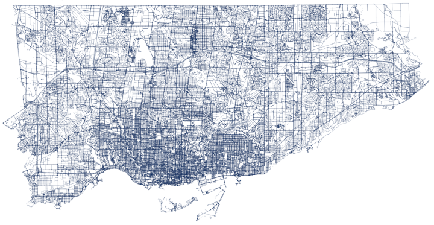
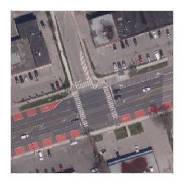
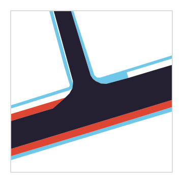
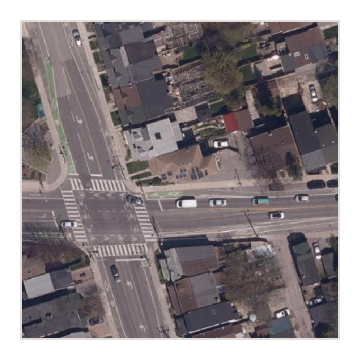
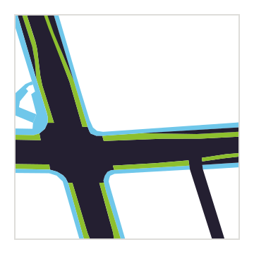

Walk down almost any Toronto street and it becomes clear who it’s built for. Sidewalks are narrow, often cracked or cluttered with utility poles and sandwich boards. Protected bike lanes and dedicated surface transit routes remain limited and disconnected. Meanwhile, multi-lane roads dominate the urban landscape, often surrounded by a sea of parking lots.
What if we asked a simple question: who is all this space really for?
The answer, backed by a close look at the data and geography, reveals deep inequities in how Toronto allocates outdoor space. Whether you walk, bike, take transit or drive, the way public land is distributed has serious implications for how we move, how safe we feel, and who can access opportunities in this city.
This city-wide map shows it clearly: roads and surface parking lots dominate Toronto’s public realm in most neighbourhoods. In total, more than 125 square kilometres of land in Toronto is dedicated to motor vehicles (approximately 20% of the City's total land area), that's over 360 Trinity Bellwoods Parks.
Mapping distribution of space in the City of Toronto
Space for cars (roads, parking lots)
Space for people (sidewalks, paths, trails, plazas)
Green space (parks, cemeteries, golf courses, school yards, ravines, hydro corridors, etc.) that to varying degrees are accessible to the public.
Data from City of Toronto and OpenStreetMap. Map data are from various collection periods (2019-2025) and may not reflect very recent changes to the built environment (e.g. Portlands redevelopment). Map created using QGIS and Leaflet. This map was inspired by a similar map of Cincinatti by Andy Woodruff.
A disconnect between space and travel patterns
The following map shows every transportation segment in Toronto; streets, highways, laneways, sidewalks, paths, trails, and public transit routes.

For each of these segments, we combined City of Toronto and OpenStreetMap data to estimate the total area allocated to the four main modes in which people travel: walking (e.g. sidewalks), bicycling (e.g. bike lanes), public transit (e.g. dedicated transit lanes), and driving (motor vehicle lanes and on-street parking). Here are examples of how this data looks relative to satellite imagery in a couple locations.
Eglinton Ave. East & Beachell St.


Greenwood Ave. & Dundas St. East


Two examples of estimating street area allocated for each of the four main travel modes in Toronto. Spaces used by multiple modes (e.g. transit routes that run in mixed traffic, pedestrian crossings) are coded to the most dominant mode. Data sources: City of Toronto and OpenStreetMap.
Summing this data across the entire City of Toronto, we find that the vast majority of space on these segments are allocated to motor vehicles, with cycling and dedicated public transit routes only receiving only a small fraction of the space.
Transportation infrastructure in the City of Toronto allocated to each travel mode
These inequalities are especially notable when we compare with Transportation Tomorrow Survey data on how City of Toronto residents typically travel.
This imbalance stems from decades of political, planning, and engineering decisions which have prioritized motor vehicles over people.
Percent of trips by City of Toronto residents taken by travel mode
Percent of local trips by City of Toronto residents taken by travel mode
Data notes: Local trips encompass all trips <5km. Trips are grouped by the primary mode of each trip (e.g. a trip where someone is driven to a subway station, takes the subway, and then walks to their final destination is classified as "Transit"). Since the majority of trips include walking (e.g. to/from transit, to/from parking a car are bicycle, etc.), the % of trips by walking is likely under-estimated. About 2% of trips are taken by 'Other' modes (e.g. school bus, motorcycle, e-scooter, etc.) that are not shown for sake of brevity.
This mismatch is not even geographically. The maps below show the difference, by City ward, between how much space is allocated to each travel mode, and how residents of those wards actually travel. Some patterns emerge, most notably that downtown and older adjacent wards are the most overly designed for motor vehicles, relative to how residents actually travel. They also have the greatest difference in space allocated to active modes, walking and bicycling, relative to how often people travel via these modes. These maps were partly inspired by similar research in Montreal, that also showed centralization of greater mismatch in micromobility (i.e. bicycling).
Note that these maps show just one method for helping to prioritizing new infrastructure, but there are others as well (safety, equity, air quality, cost, etc.)
Data were linked to Wards via areal interpolation. For travel mode share data, this was based on smaller neighbourhood-sized zones. For more maps on how people travel in the Toronto region at this zonal level, check out our interactive map.
Glimpses of a better future
Toronto already has implemented a number of low-cost interventions to re-balance our streets, from CaféTO patios to pilot bike lanes and seasonal road closures. These glimpses of a better future highlight what’s possible when space is shared more equitably. The status quo, by contrast, produces clear harms: unsafe streets where traffic violence is normalized, high emissions from the city’s second-largest source of greenhouse gases, and inequities that privilege those who can afford private vehicles over those who cannot. Despite car dominance of street space, many residents still choose to walk (33%), bicycle (4%), or ride public transit (13%) for trips under five kilometres. That suggests that if more space were allocated to these modes, Toronto would not only reduce inequalities but also likely see significant mode shift.
Dedicated surface transit lanes
Despite decades car-based planning, there are examples of how Toronto is starting to reallocate space for public transit. For example, in Scarborough, dedicated bus lanes have been added to Eglinton Ave. East, Kingston Rd., and Morningside Ave. as part of the City's RapidTO surface transit network plan.
Painted bus lanes on Kingston Road in West Hill, Scarborough, July 10, 2025. Wikimedia Commons.
Similarly, the King Street Transit Priority Corridor, in downtown Toronto, a globally recognized success, was fundamentally an exercise in reallocating road space from low-occupancy private vehicles to high-capacity streetcars. By making transit the primary focus, the project moves tens of thousands of people daily more efficiently and reliably than before.
Toronto has approximately 1,300 kilometres of highways, major arterial roads, and minor arterial roads. The vast majority of these roads have TTC surface transit routes and have ample space to add dedicated bus or streetcar lanes to improve transit reliability and travel times. These roads will not truly be effective "arteries" until they are designed to prioritize people who ride public transit, instead of only motor vehicles.
Extrapolating from City of Toronto reports of recent costs of bus lanes in Scaroborough ($470,000 / km), adding dedicated transit lanes to half of the City's highway and arterial road network would cost approximately $305 Million. This is quite low when comparing to rising costs of larger public transit infrastructure projects across Canada.
For example, the most recent cost estimate for the three-stop Scarborough Subway Extension is $10.2 Billion ($1,300,000,000 / km). This is not to say that dedicated surface transit lanes are a replacement for higher capacity public transit projects, but rather that they are a cost-effective way to improve transit service quickly as well as provide connections to potentially all neighbourhoods in city.
To be as successful possible, surface transit routes also require implementing measures like transit-priority signals and enforcement against illegal parking in dedicated transit lanes.
Converting unproductive on-street parking to better uses
On-street parking isn't free. Street parking might seem like a minor detail in how we plan urban space, but it plays an outsized role in limiting how streets can be used. In many parts of Toronto, curb lanes are dedicated to vehicle storage parking, despite being some of the most valuable real estate in the city.
In the core, the costs go beyond opportunity. A University of Toronto report found that illegal on-street parking, including in no-parking zones, or double-parking, “reduces lane capacity and disrupts traffic flow, particularly during peak hours.” Their study found that even relatively short parking violations in the Financial District led to measurable increases in congestion and delays for all road users. Moreover, as the Globe and Mail editorial board noted, “road space at the curb is a valuable and limited commodity,” and giving it away cheap reflects “bad economics and bad politics”.
So how can on-street parking be converted to better uses?
A visible example is CaféTO, which has repeatedly demonstrated how curb lanes can be transformed from storage for a single idle vehicle into vibrant patios serving dozens of people, acting as a lifeline for local restaurants and creating new social hubs. The City has also formalized this concept through its Parklet Program, which provides official guidelines for converting individual parking spots into mini public parks, complete with seating and greenery, proving that even small-scale interventions can inject life and community onto a street. Climate resilience is improving by reclaiming pavement; through its Green Infrastructure program, Toronto is now building bioswales in the space once occupied by asphalt curb lanes to absorb stormwater and provide green space to neighbourhoods.
Protected bicycle lane and newly planted green buffer on Tecumseth St. just south of King St. Photo by Jeff Allen, August 2025
This principle of reallocation has been scaled up with transformative results for transportation. Along major corridors like Bloor St., University Ave., Danforth Ave., and Yonge St., the installation of protected bike lanes came from directly repurposing space previously dedicated to on-street parking. This represented a clear policy choice: prioritizing the safe movement of thousands of cyclists over the storage of a few dozen cars.
What about the costs? Funds from strategies like demand-based parking pricing, increased traffic enforcement, and congestion charges could each generate ample revenue to re-design Toronto streets.
Toronto recently eliminated parking minimums and even introduced maximums to curb overbuilding, a positive shift. But curbside parking remains largely untouched. Most spaces are still free or underpriced, treated as a public entitlement rather than a scarce resource. As Donald Shoup and others have long argued, cheap parking is a subsidy that encourages driving, worsens congestion, and prevents curbspace from being reallocated to higher-value uses like bike lanes, transit priority, green buffers, or delivery zones. Until Toronto embraces demand-based pricing, the street remains a free bonus for drivers, reinforcing inequality in how public space is shared.
Similarly, in our previous work, we also estimated the potential income of congestion pricing, based on recent travel survey data that a $9 fee for driving into central Toronto would generate over $2.0 million per day in revenue.
Open streets
What are open streets / pedestrianization of streets - discuss benefits -
Many cities, e.g. Montreal open dozens of streets for months of the year. Toronto only has Market St (summer), Willcocks St (year round), maybe 1 or 2 more???? and occasional weekend festivals.
Connaught School Open Street in Calgary, Alberta.Video by Kosta Diochonos, School of Cities. Instagram / TikTok
Residents are supportive of change
Surveys in Toronto have also consistently shown that most residents want more space for walking, bicycling, and public transit.
For example, in Scarborough, a region often labeled as car-dependent, University of Toronto research led by Ignacio Tiznado-Aitken, Assistant Professor in Geography and Planning, asked residents which moded should receive the priority for space and investment. Comparing this to how space is currently allocated in Scarborough highlights a stark disconnect between what people want and what has been built.
Percent of space allocated to each travel mode in Scarborough
Survey of Scarborough residents on which mode should have the "highest priority in terms of space and investment"
The minority opposition to street re-designs and reduction of parking is sometimes framed around concerns of customer access and deliveries. But deliveries can be adjusted to hours mornings or late at night (e.g. mornings or late at night). While the amount of customers arriving by motor vehicles is often over-estimated by merchants. In Toronto, after bike lanes were installed along Bloor St. in the Annex and Koreatown, the percent of visitors who arrived by car did not change significantly, and overall people were spending more.
Political and psychological challenges
So if there is overall support for street re-design projects when they are proposed, and the data of recent projects show overwhelming positives for transit riders and active travel, with little detriment motor vehicle travel times, then why are changes limited to a few case studies and disconnected sections? Or when changes do happen, why is implementation often riddled with compromises which limit their potential effectiveness?
Cost should not be a barrier, since as we noted, the cost of prioritizing surface public transit, reallocating on-street parking, and opening streets is relatively quite small – especially when comparing to major infrastructure projects. Moreover, costs could be covered by more intelligent parking pricing and increased enforcement.
A major challenge is shifting from the political status quo, which greatly favours those with access to private motor vehicles and maintains infrastructure that privileges their convenience over equity and community benefit. As John Lorinc writes in Spacing, “Toronto needs to confront the reality that curbside real estate is a limited and highly contested resource. Yet, in many places, we still treat it like an entitlement.” Decisions about street space aren’t neutral or technical, they reflect political choices. What could otherwise support bike lanes, patios, green buffers, or loading zones is instead handed over, often at low cost, for drivers to leave their cars idle.
Policies that reduce car dominance are often perceived as unreasonable, not because of data or evidence, but because of a widespread assumption that driving must remain the default mode of transport. Recent research has framed this as motonormativity, which refers to the deep cultural bias that treats car use as normal, necessary, and morally neutral, despite having detrimental safety, equity, and environmental impacts. This bias, shaped by decades of media, built infrastructure, and policy leads many people to apply a different standard of judgment to driving than they would to comparable behaviors. For example, research in the UK, found that most people opposed exposing others to secondhand smoke, but many accepted toxic car fumes on crowded streets without question. This double standard makes it politically difficult to reallocate road space toward public transit, cycling, and walking even when such changes would improve public health, safety, and sustainability.
Another possible barrier to change is pluralistic ignorance, a social psychology concept where people individually reject a norm or belief, but incorrectly assume that most others accept it. This can lead to the norm appearing stronger than it actually is. For example, recent research on motonormativity found that many people assumed that other people’s support for non-car transport was lower than their own support, which could lead to less political action than what people want. This research finding, combined with surveys of residents, shows that ample support for public transit and active travel is there, it just needs to be unlocked with increased evidence, advocacy, implementation, and political will.
A fairer future is one we design
Public space belongs to everyone, not just car owners. For too long, Toronto’s streets have served vehicles first. But as we've seen, this is not inevitable. The choice to rebalance our streets is already underway. The successes of CaféTO, the King Street transit corridor, and new protected bike lanes are not isolated experiments; they are a clear verdict. They prove that when we reclaim space from idle cars, we create more room for people, for community, and for a more resilient city.
The path forward is to make this the rule, not the exception. We can achieve this by implementing smart policies and cost-effective re-designs that treat our land as the valuable public asset it is. This means decisively reallocating on-street parking on streets to create permanent space for wider sidewalks, safer bike lanes, and dedicated surface public transit routes. It means intelligently pricing our curb lanes to manage demand and reinvesting that revenue directly into the neighbourhood improvements residents are asking for: better transit, pedestrian, and cycling infrastructure; and vibrant street-scapes and public spaces.
Imagine walking down a curb that is not a lane of cars, but a widened sidewalk filled with planters. Imagine biking on a protected lane unblocked by parked vehicles, or catching a bus that arrives on time because its path is clear. This isn't a distant dream. When we choose to design streets for people, we build a safer, greener, and more equitable Toronto for everyone, starting with the public space that actually serves all its residents.
Acknowledgements
We would like to thank Mia Wang for providing data analysis and GIS support for this project; OpenStreetMap contributors as well as the City of Toronto for sharing open data that allowed for the analysis; Andy Woodruff and Daniel Romm who created excellent maps other cities that inspired parts this project; Geoffrey Anhorn and Kosta Diochnos for providing videos; and ____ for their comments and feedback ... ...